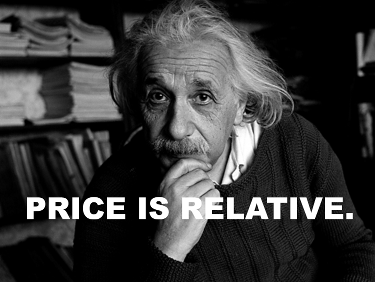

Writer. Filmmaker. Lover of cuckoo clocks. Email: harrylimerok @gmail.com.


Over the past year, this ROK writer has taken a leave of absence to pursue his local real estate market in Ontario, Canada. Starting out in November 2017, I have managed to achieve very good educational, interpersonal, and (some) financial growth after beginning as a complete greenhorn.
Pursuing real estate offered me a big bay-window view into the essence of free markets and individuals. Prior, I may have understood these concepts in theory from books and websites, but did not fully appreciate them until experiencing their mechanics at work, affecting and influencing my well-being in real-time.
Understanding these maxims and learning how to apply yourself will help you thrive in the business. Like any ecosystem, you must adapt to survive. If one is new or continues to engage in real estate or another highly oversaturated part of the private sector, here are eight maxims one should grasp in order to outlast the competition.
Bacon is for winners.
Yes, everything. A colleague of mine had his offer accepted on a property because he threw in a pound of bacon with the purchase agreement. My partner and I got our price by allowing the seller to take their water softener with them (barely a concession). When everything is negotiable, get what you want and give up what makes the other side happy if you don’t care about it.
Like Trump did in real estate and does in politics now, you should start out every deal by making extreme demands that favour your side, then—if you have to—walk it back closer to the middle (but where you still come out winning).
If you want something, ask for it and only consider relinquishing if the buyer or seller objects. If you have to drop a condition, do it if it will not hurt your deal, but ALWAYS counter with your own condition.
For example, you present an offer to a seller. They agree on the price, but don’t want you to inspect the property or make it conditional on inspection. But it’s an old house, you think the septic is bad, so you reply: “Fine, I will remove the inspection condition from our agreement. However, we will still conduct an inspection within 5 business days at our own expense. If that septic tank ends up needing to be replaced, up to 20 thousand dollars will be deducted from the purchase price.” Here, the seller gets their firm offer but you also get your inspection and the right to adjust the price if the septic is gone.
When everything is negotiable, there’s no sense being soft in your approach. Trust me, the other side will appreciate your strength and willingness to give and take.
Ninety-nine percent of the real estate investors, agents, and entrepreneurs I’ve encountered are not greedy profiteers in it for zero-sum gain. They cannot afford to be as reputation is crucial in the biz. If one is regarded as a scammer by the local real estate community, they will lose out on lucrative partnerships and deals.
The threat of reputation destruction helps regulate greed or misbehaviour. While self-aggrandizement is rampant among them, real estate types do not want to screw each other over. Simply, they need incentives to work with and help you. Altruism in a vacuum doesn’t exist. Even people who say, “I’m happy to help” without pushing for compensation will eventually walk if you do not deliver the goods.
Every deal must be a win-win and structured in proportionate to each party’s value and output. There is no free advice or favours; you have to know your value and bring it immediately to the table. If you’re new, admit it upfront and pay that mentor for their time or partner with a pro and offer them a disproportionately larger profit share (like 70-30, or even 100-0!).
Real estate entrepreneurs are not given benefits, a steady salary, or a cushy pension. They are independent wealth creators and thus need an incentive to participate and produce that wealth. That doesn’t make them greedy jerks, just individuals requiring the necessary motivation to offer value to benefit themselves and others.
Everyone, at the end of the day, is in it for themselves.
This point may seem contradictory to #2, but it isn’t. Let me explain. When you invest yourself in real estate, you start to tune into everyone’s ulterior motives. The more you commit yourself to the free market, your brain evolves and develops an ability to read people’s minds and motivations because you need that information to appeal to them.
Here, you realize that everyone has deep-seated ulterior motives. They have dreams, expectations, goals, and personal/familial needs that precede the interests of anyone else. You witness The Selfish Gene quite vividly through real estate as everyone is vying—and cooperating—for greater success and power.
This type of “selfishness” is completely natural (selection). That fact is not an argument against capitalism and the free market, but rather for it. People are so hungry to be “selected” that we need capitalism to regulate those selfish instincts and provide an outlet that allows people to express those instincts so long as they create surplus value in society.
Socialism, on the other hand, denies this fundamental reality and pretends we are all inherently selfless. In the end the socialist’s paradise becomes unequal, immoral, and murderous. Free markets are the opposite: cynical, tough, but fair.
In business, people need to trust you.
Paradoxical, isn’t it? Humans are inherently selfish, laden with ulterior motives, they need incentives to work for you… but real estate is a relationship business. The beautiful thing about free markets is selfish people have to add value not only to themselves but others. You have to build genuine relationships to do this. You cannot win on a lonesome crusade. Connections build the networks to success.
In real estate, people seek out relationships that service their goals and needs. In turn, they must reciprocate by servicing other’s goals and needs. As soon as a relationship becomes one-sided, it falls apart. You need solid two-way relationships to gain access to great deals and business partners.
Beyond the quid pro quo, people also must trust you. If colleagues believe you are only about money, your growth in the business will reach an alarming standstill because no one will see a future working with you. In that case, that’s the free market punishing you for not playing its game. Once again: it’s tough, but fair.

Unlike gender, price is relative and whatever we agree it to be. There’s a certain limit to that claim—for instance, a fully renovated estate home is objectively more valuable than a dilapidated fixer upper (though the exact price would vary greatly in different markets).
Oftentimes, “fair market value” price is determined after several volleys of counteroffers, power plays, and knowledge drops. When buyer and seller agree on price, market value emerges—but it’s ever-changing.
Price is a state of mind. It’s an attitude, a feeling. And a higher price doesn’t always mean more to a seller. Admittedly, I have at times capitulated to sellers and offered more money on their house, only for them to reject the higher offer. They rejected it because they sensed weakness.
My weakness changed the market value of that house. Sellers who start with a firm price often drop five figures by signing. On the other hand, sellers who seem “negotiable” from the outset will back out on a deal even when they get a great price.
Price only truly matters when a seller faces foreclosure or a certain defined amount of debt that locks their price in place. Generally though, price is secondary and you win by (a) solving the seller’s problems (e.g. closing fast and buying their junker as-is) or (b) holding your ground against a seller who threatens to walk away, jerk you around, or raise their price.
Price is often about knowledge and power. Which leads to #6…

Whoever knows the most wins.
At many points in real estate, you will encounter things you don’t know. It is your duty to learn them after to patch up that area of ignorance in your brain. In a voluntary business transaction, it’s up to you to tip the scales in your favour.
You cannot force someone to accept your price; you have to convince them. You do this through knowledge gathering (or what is referred to as “due diligence”). When you research the market, know what adds value to a home and how much a repair costs. You will gain a dramatic upper hand at the negotiating table.
Say you’re trying to buy a home that is located close to the water. You do your research and find out the home is on the floodplain. Hmm. You go to the house and ask the owner if the basement is waterproofed and if the downspout’s leader pipe discharges at an acceptable distance from the foundation. No, it doesn’t.
The foundation is concrete block, the seller mentions. You reply that poured concrete is more durable and easier to waterproof. Also, unlike the comparables, this home’s basement doesn’t have a separate entrance, you add. You’ll have to cut one in, add drywall, and make sure it’s up to code. The seller nods.
Some of these are fairly standard and inexpensive problems, but the more knowledge you have the more you can handle objections and leverage deals in your favour. The free market rewards those who are the best equipped—so why not play by the rules and get equipped?
Bernie Sanders be damned!
In real estate, the majority of brokers make very little commission and a tiny minority of well-connected, knowledgeable, and go-getting ones reap the harvest. That is not because real estate is mean or unfair, but because it rewards the fittest.
Most of the agents I’ve encountered are all talk. Incompetent, lazy, and terrible at negotiating. That’s not to impugn the job of realtors. There are fantastic brokers out there, and the 1% of realtors that have the most skills bring in most of the clients and sales commission.
Similarly, most investors will start off, fail, make excuses, and just quit. The reality is many people go into real estate, but few are actually successful. That’s no systemic imbalance; regardless of race and gender, most novices don’t have the persistence, resilience, or IQ to tackle real estate in the long-term.
That’s a good thing, if you’re a winner. That means less competition for you and still plenty of properties to buy and sell.
In real estate, volume is essential.
Like in game, abundance mentality is king. In real estate and the free market in general, you need systems and people that produce volume for your business. If you do not have multiple opportunities, others will sense your singleminded desperation in their deal. When they do, you’re burnt toast.
Whoever is genuinely able to say “no” and walk away in a deal wins every time. When you don’t care about a deal working out because you have too many on the go, it is an aphrodisiac for the people on the other side of the negotiating table. They will often chase you down and give a better price without you even asking.
In the past, my partner and I have encountered screaming deals, gotten emotional over the potential profits, and ultimately lost out in the end. Didn’t matter the seller’s situation; they sensed our neediness. When big money is involved, you can easily get too attached.
To compensate for that, we created a lead-generating system in real estate that, at this point, brings in enough volume that we don’t have to fake that calm and collected mindset. It just is with us.
Once you have gained an abundance mentality in real estate, even if your net worth has not moved yet, you will have already won.
Read Next: Why All Men Should Invest In Real Estate